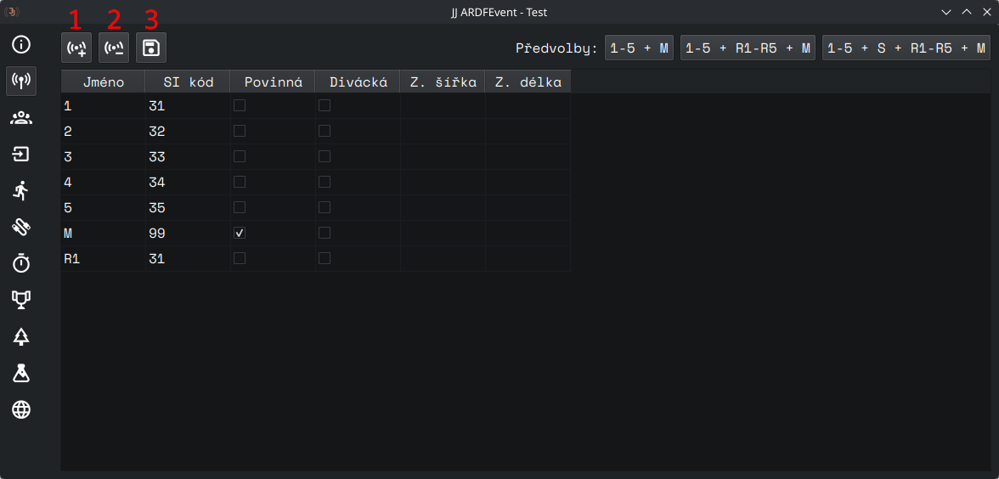

Kontroly
Spravuje kontroly v závodě.

Ovládací prvky
(1) Přidat kontrolu - Přidá novou kontrolu do seznamu.
(2) Odebrat kontrolu - Odebere vybranou kontrolu ze seznamu.
(3) Uložit změny - Uloží provedené změny.
- Předvolby - Pro rychlé nastavení vyberte jednu z předvoleb. (Stále je nutné kliknout na "Uložit změny" pro uložení změn.)
- Tabulka kontrol - Tabulka má 6 sloupců:
- Název - název kontroly (např.
1,R4,3F, ale může být iPepa). - Kód - SI kód kontroly (31-255)
- Povinná - Závodník kategorie, která má přiřazenou tuto kontrolu je diskvalifikován, nenavštíví-li ji.
- Divácká - odděluje od sebe kontroly na sprintu (zatím není oficiálně podporováno)
- Z. šířka, Z. délka - zeměpisná šířka kontroly (volitelné) - v budoucích verzích pro počítání pořadí
- Název - název kontroly (např.
Spojené kontroly
Je-li na jedné SI jednotce více kontrol (1 a R1 na SI 31), vytvořte dvě kontroly (1 a R1) se stejným SI
kódem (31). Při vyčítání budou brány v ohled obě kontroly.